|
E.V.V. 1 - Roda JC (0-4) 7 augustus 2001 |
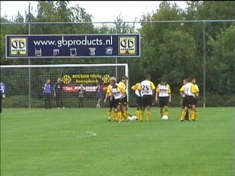
Roda speelde vanavond tegen eersteklasser EVV uit Echt.
In de warming-up zien we Roda in de uit-shirts met op de
achtergrond de "Boesjer vrunj" uit Koningsbosch.
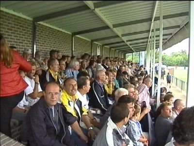
De overdekte tribune was compleet vol.
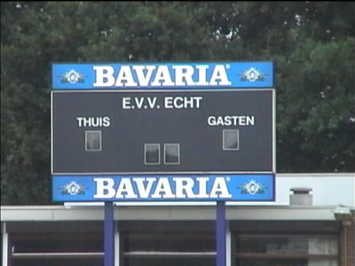
Ook in Echt tappen ze BAF en schenken ze 3-ES (f 2,25).
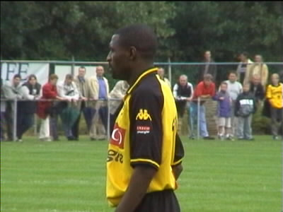
Lawal speelde de hele wedstrijd. Wordt hij de linksback? In
elk geval was Sonkaya nergens te bekennen en werd Senden
niet opgesteld. Ger mocht in de pauze als keeper fungeren
voor de wisselspelers.
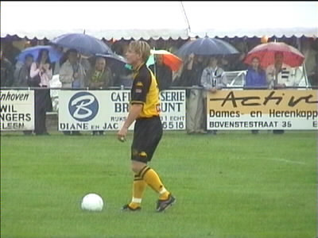
Gedurende de helft van de wedstrijd regende het. Hier gaat
Berglund een penalty nemen.
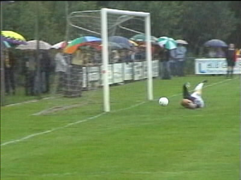
Doelman Reijans kan de bal wegstompen.
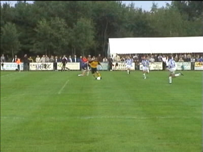
Balaanname door Berglund die de keeper al voorbij is en
vervolgens beheerst inschiet.
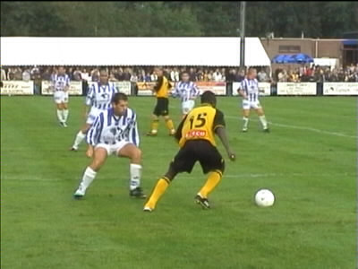
Sonko maakte een voortreffelijke indruk. Zijn gretige spel
hield Soetaers tot diep in de tweede helft op de bank.
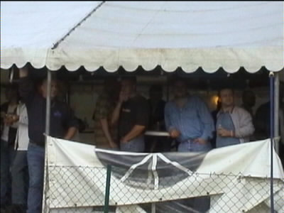
De NSC hadden geen paraplu meegenomen en bekeken de
wedstrijd daarom vanuit de feesttent.
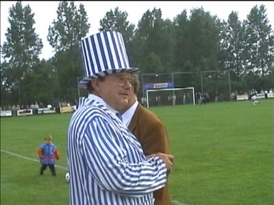
De plaatselijke malloot.
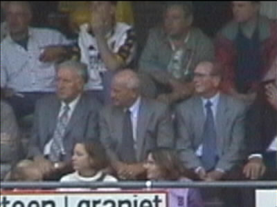
Bij de prominenten herkennen we o.m. Nol Hendriks en
Theo Pickeé. Ook de Eneco-directeur zat op de tribune.
©KPD